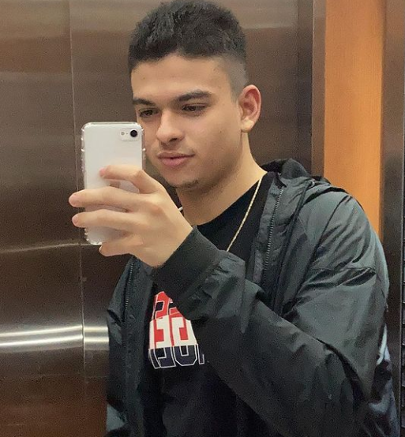

Meu nome é Fernando Porto, tenho 22 anos e desde pequeno sempre fui familiarizado com a tecnologia. Criava conteúdos para o Youtube, configurava servidores de jogos e na plataforma Tumblr, uma rede social, eu configurava a minha própria página com uso do HTML. Iniciei minha carreira profissional aos 18 anos como Auxiliar Administrativo e aos 22 anos decidi migrar para área tecnológica como Desenvolvedor Full-Stack Júnior pela Generation Brasil, onde pude desenvolver minhas habilidades técnicas, comportamentais. Tenho facilidade de adaptação em equipes e muita persistência para atingir meus objetivos.